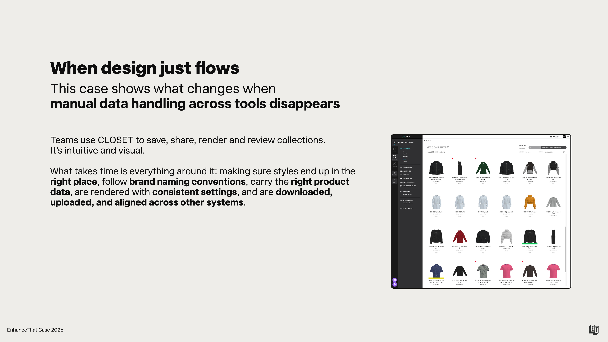
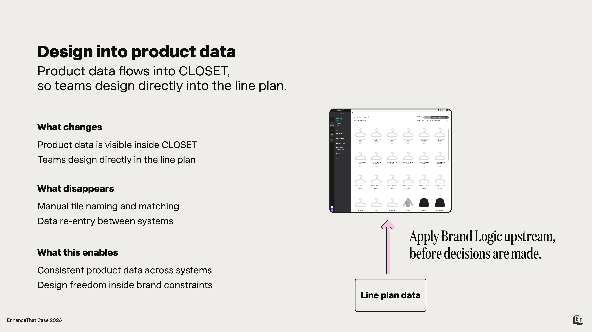
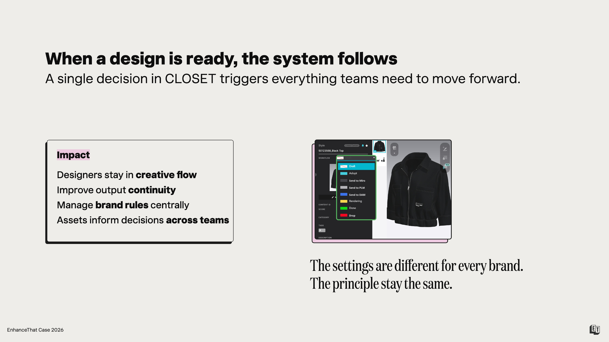
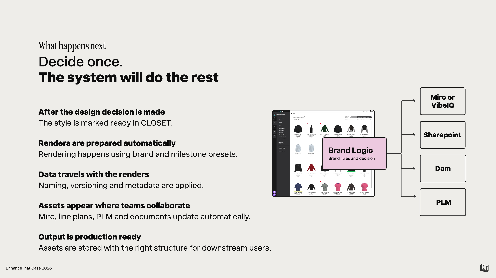
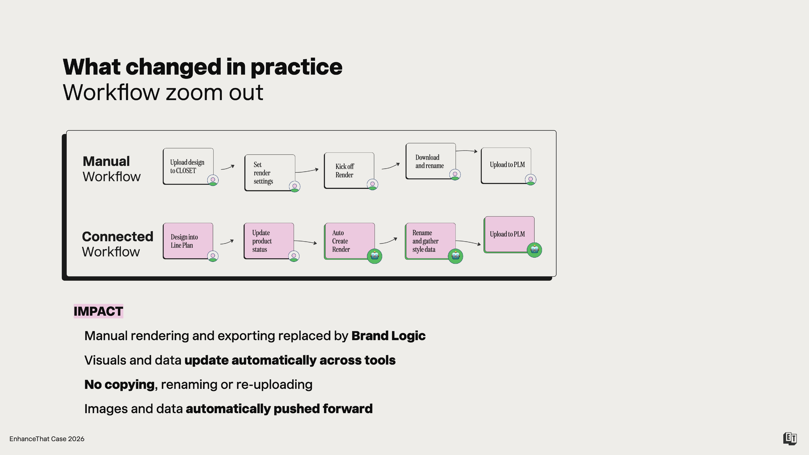

CLOSET · PLM · Workflow Automation
When design just flows
How connecting CLOSET to PLM data - through Brand Logic - eliminated manual handoffs and enabled end-to-end workflow automation across the product creation process.
Applied across brands from global sportswear to premium European womenswear.
The situation
CLOSET worked.
The connection to PLM didn't.
Teams were using CLOSET to save, share, render and review collections. Intuitive, visual - it worked. But what took time was everything around it: making sure styles ended up in the right place, followed brand naming conventions, carried the right product data, were rendered with consistent settings, and then downloaded, renamed and uploaded into every other system that needed them.
The same data was being entered, re-entered and reformatted at every handoff. Not because the team wasn't capable - because the tools weren't connected.

What we did
Apply Brand Logic upstream.
Before decisions are made.
The fix wasn't to change how the team worked in CLOSET. It was to connect product data to CLOSET before design decisions were made - so the tool already knew the brand rules, the line plan structure, the naming conventions and the downstream requirements.
Brand Logic doesn't live in a single tool. It's a layer that sits above them - and once it's connected, every tool in the chain benefits.
How it works
Design directly into the line plan
Product data is visible inside CLOSET. Teams design directly into the line plan - not alongside it. Manual file naming and data re-entry between systems disappears. What remains: consistent product data across tools and design freedom inside brand constraints.

When a design is ready, the system follows
A single decision in CLOSET triggers everything teams need to move forward. Designers stay in creative flow. Output continuity improves. Brand rules are managed centrally. Assets inform decisions across teams - automatically, not manually.
The settings are different for every brand.
The principle stays the same.

Decide once. The system does the rest.
Once a style is marked ready in CLOSET, renders are prepared automatically using brand and milestone presets. Naming, versioning and metadata are applied. Assets appear in Miro, VibeIQ, SharePoint, DAM and PLM without anyone moving a file. Output is production-ready from the moment the decision is made.

Workflow zoom out
The same outcome.
Half the steps.

Impact
What actually changed.
- Manual rendering and exporting replaced by Brand Logic
- Visuals and data update automatically across tools
- No copying, renaming or re-uploading - by anyone
- Images and data automatically pushed forward to every downstream system
Using CLOSET or planning to?
Let's connect it
to the rest of your stack.
Built by people who've worked inside Nike, Tommy Hilfiger and Calvin Klein.